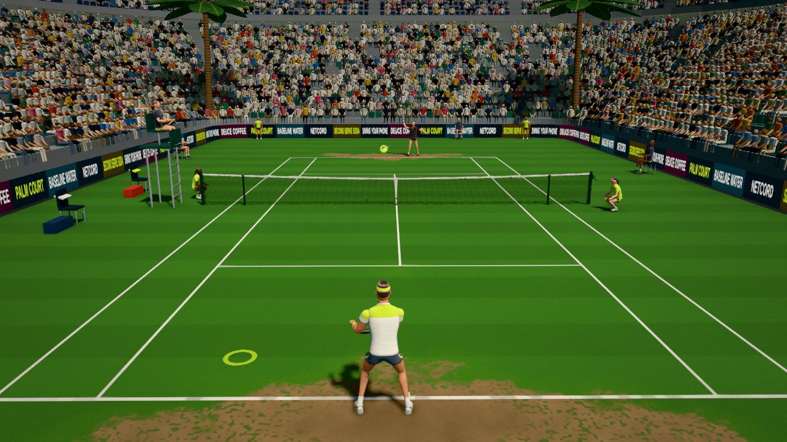

Key takeaways
- Your first job is to get the ball back deep. A return that starts an even rally is a success.
- Use a short swing. The server has already supplied the pace, so you only need to block or punch the ball back.
- Split step as the server hits the ball, so that you land ready to move in either direction.
- Stand further back for a big first serve and step in on a second serve, taking it early to attack.
The job of the return
A serve starts the point in the server's favour. The server has chosen the moment, the spot and the spin, and may have hit the ball as hard as they dare. Your job is to take that advantage away. The best ways are to get the ball back and to get it back deep, so the server has to hit another ball from behind the baseline instead of attacking. A hard-hit return that goes out gives the server the point. The rule at most levels is: get it in, get it deep, and then look for something more on a weak serve.
Where to stand
Start with the baseline as your reference. Against a big first serve, stand a step or two behind it, which gives you time to see the ball. Against a slow or weak second serve, move up to or inside the baseline so you can attack it. Sideways, the sensible position is where you can cover both the widest serve and the one down the middle (the T). Picture the two extremes and stand on the line that splits them, so neither is out of reach. If the server keeps going to the same corner, move a little towards it. Nothing is permanent: you can change position between serves, and watching the server's habits is part of the game.

Ready position and the split step
Stand with your feet wider than your shoulders, knees bent, weight forward on the balls of your feet, and the racket in front of you held with both hands. Stay relaxed and keep moving: a small rocking or bouncing motion keeps your legs alive. As the server tosses the ball, begin to still yourself, and perform a split step, a small hop that lands just as the server's racket meets the ball. If you are still in the air when the ball comes off the strings, you are late. If you landed a moment before, you are ready to push off in whatever direction the ball goes. A good split step is one of the most useful habits in returning.
Read the serve
- The toss. A toss out to the right of a right-handed server often means a slice, and one above and behind the head suggests a kick. A toss in front usually means a flat serve. Good servers disguise their toss, so treat it as a clue and not a certainty.
- The racket. Watch the server's racket and the ball at contact.
- The pattern. Over a match many servers favour one location on important points, such as the wide serve at 30-40. Notice it and use it.
- The depth. A ball that is going to land short in the box can be attacked. One that is going to land deep needs to be blocked back.
The return stroke: shorten and block
- Turn, do not swing back. The turn of the shoulders is your backswing. On a fast serve there is no time for more.
- Meet the ball in front, with a firm wrist and a compact swing. Let the pace of the serve carry the ball.
- Hit through the middle or cross-court, and deep. The net is lowest in the middle and the diagonal is the longest line on the court, so both give you the most room for error.
- Finish and recover at once, ready for the next ball.
Against a very fast serve a chip return, a short, low slice with a firm racket, is a reliable choice. It also works well against a server who follows the serve to the net, because it dips at their feet.
Where to aim
| Situation | Good target | Why |
|---|---|---|
| Big first serve | Deep, through the middle or cross-court | You only need to start the rally, and the middle keeps you safe. |
| Second serve that sits up | A deep corner, or the server's weaker side | Step in early and hit with a full but controlled swing. |
| Server comes in behind the serve | Low, at their feet, or a lob over them | It makes the first volley difficult. |
| Short, weak serve | An approach shot into the open court | Take the initiative and follow it to the net. |
| You are rushed or off balance | High and deep through the middle | Buy time and reset the point. |
Common mistakes and fixes
- Too big a swing. The ball comes faster than you expect, so you are late and spray the ball. Shorten the backswing to a turn.
- No split step, or a late one. You are flat-footed and reach for the ball. Practise the hop until it is timed with the serve.
- Standing too far back against a second serve. You hand the server a free ball. Move in and take the ball early.
- Trying to hit winners off a big first serve. Most of those go out. Aim to start the rally.
- Watching the server, not the ball. Stay focused on the ball from the toss.
- Retreating as the ball arrives. Move forward into the shot, not backwards.
Drills
- Ten returns. A partner serves ten balls, you return them all into the court. Count how many go in and deep. Aim for a higher count each time.
- Deep target. Place cones near the baseline and try to land returns beyond the service line.
- Block drill. A partner hits hard balls from the service line at your forehand and backhand, and you practise a short, firm block.
- Second serve attack. A partner serves second serves, you step in and drive each one deep, and count your good returns.
- Return games. Play points that start with a serve, but score only the points that the returner wins, to see how well the return sets you up.
Try it in Palm Court
In a Quick Match against the CPU you receive in every second game. The three CPU levels show the range: a Rookie serves slowly and with a lot of scatter, while a Pro serves much harder, so moving up a level is a good way to practise a more compact return. With a phone or a camera the timing of your swing aims the ball, and a slightly early swing pulls the return cross-court, which is also the target you want in real tennis; with a mouse or a controller you aim directly. Nolan Jokavic, the first pro and free from the start, is the best returner in the game, and watching how he blocks first serves back deep is a good model. Gianni Sinnari (level 15, or 3,000 Fuzz) has a strong serve and tests your blocks. The serve and return guide covers the game's controls, the serving article shows what the server is trying to do, and the how to play page explains the swing.